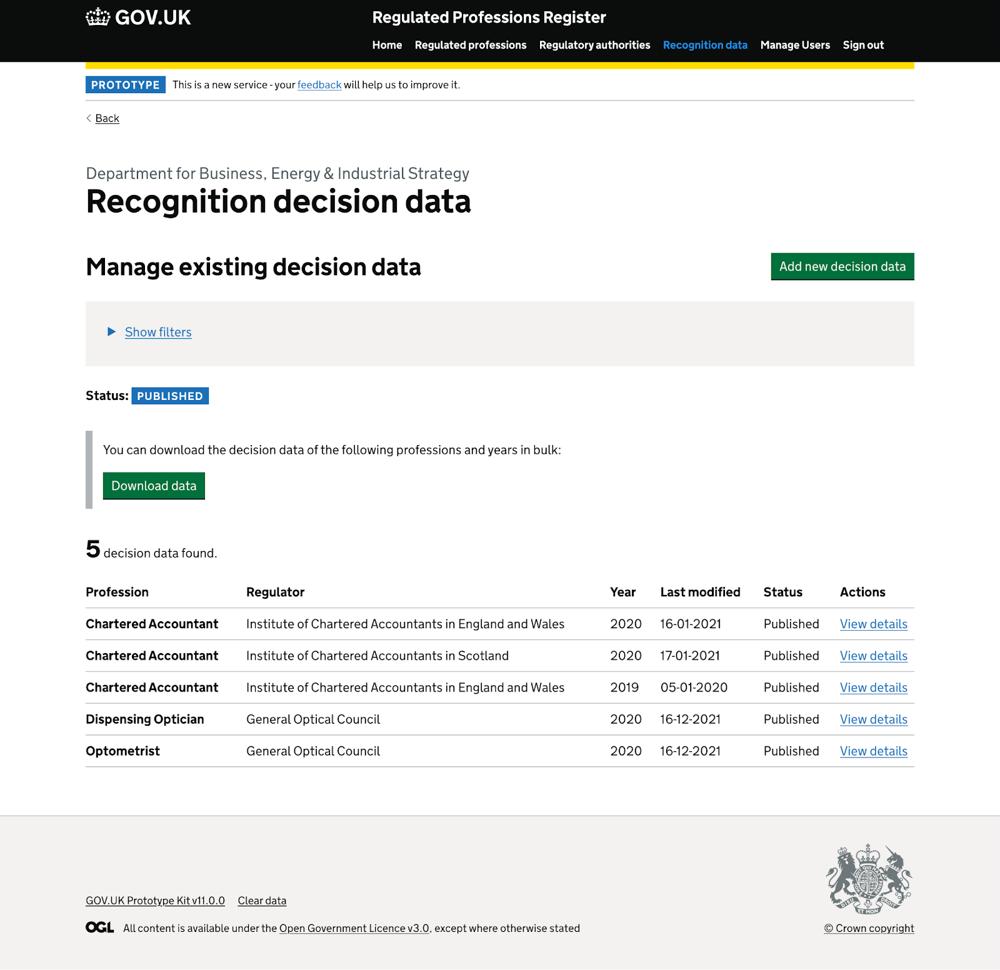
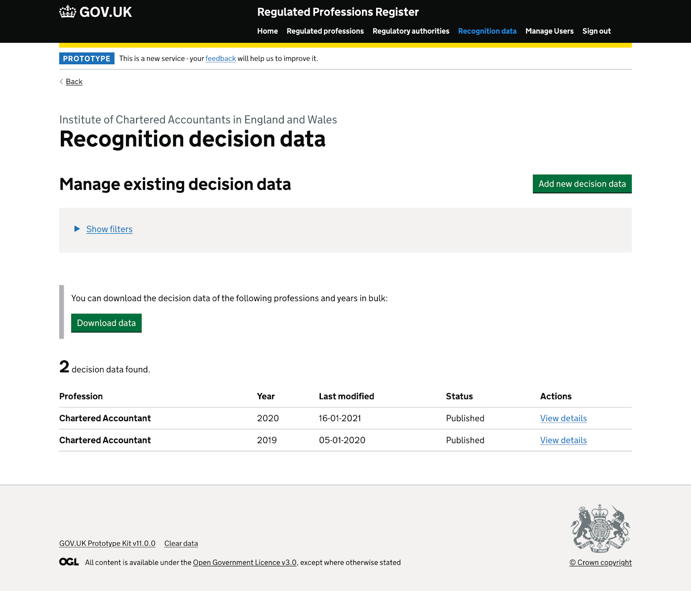
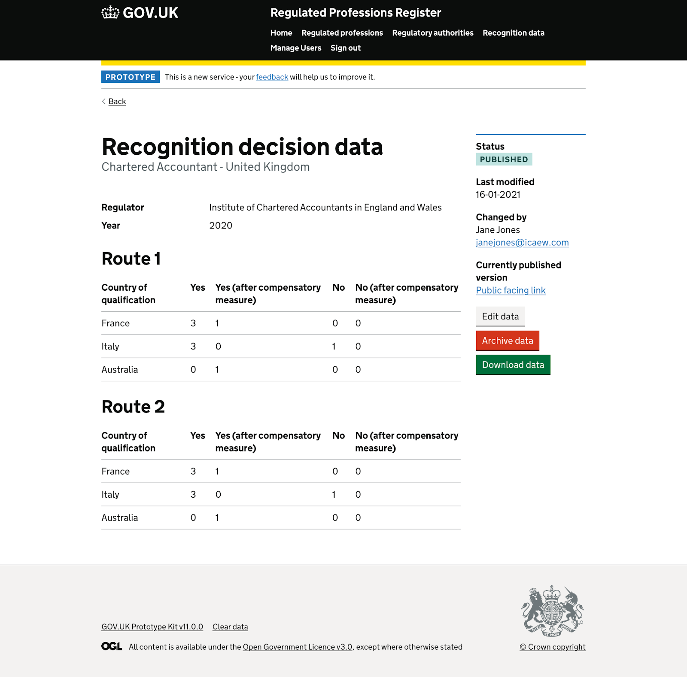
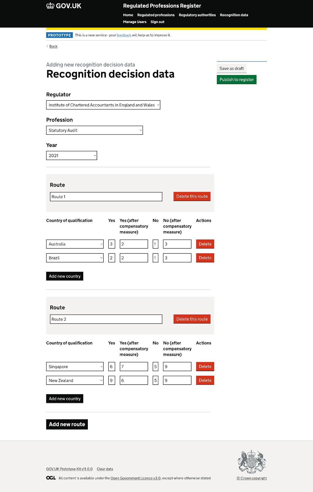
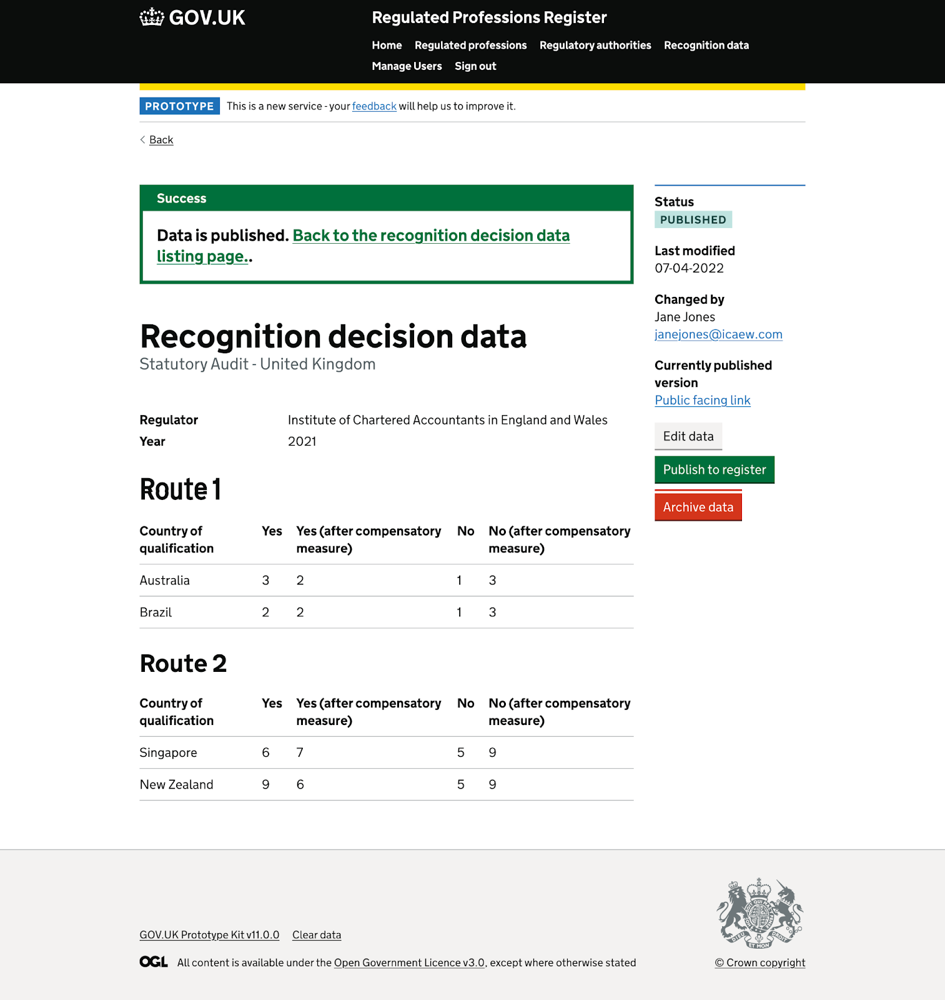
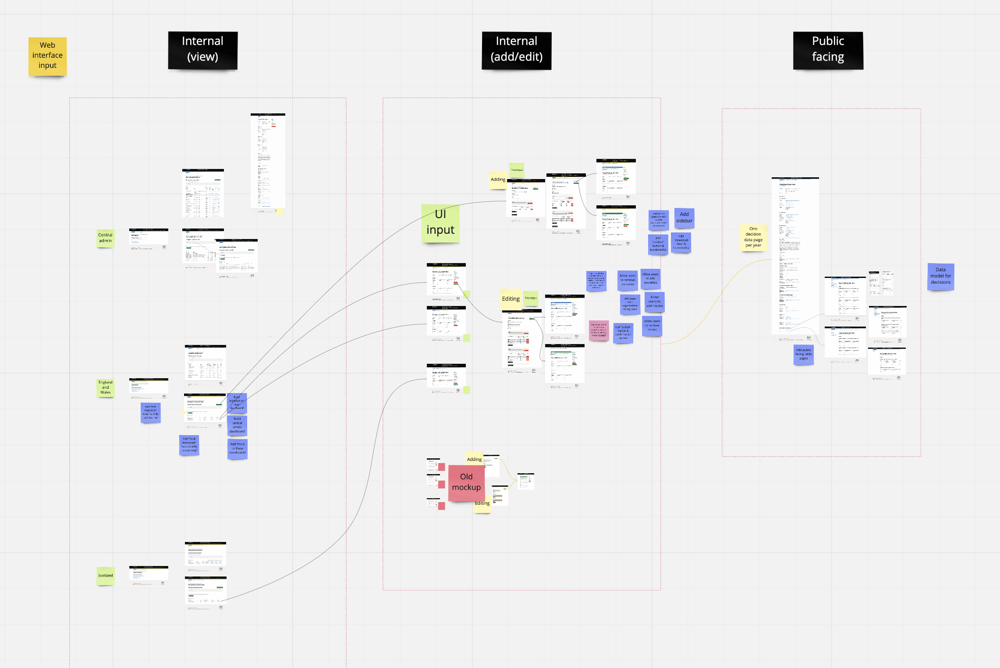
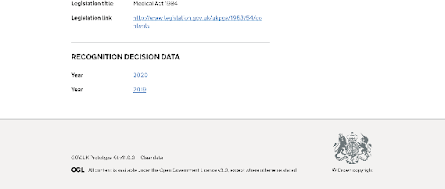
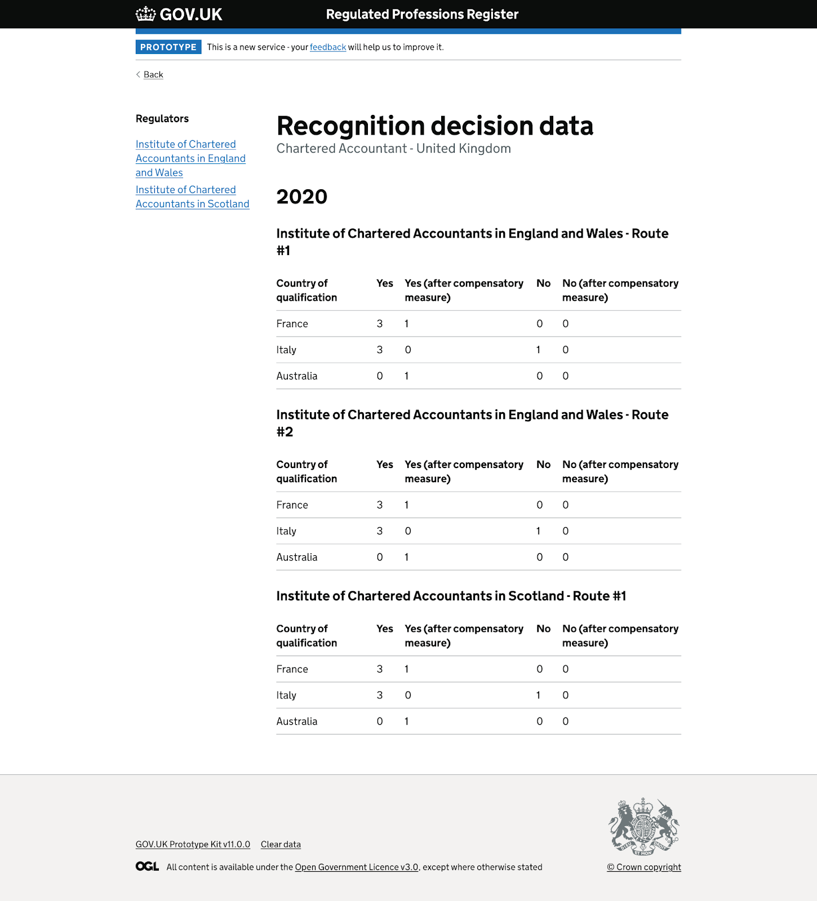

Overview
After the design collaborations in sprint 9, we further refined the design according to the internal team’s feedback.
A new decision data section
There will be a new decision data section that is accessible via the top navigation and the admin homepage. Users from different organisations will see different content.
Decision data listing page - central admin
{kind=link}
Decision data listing page - regulator users
{kind=link}
Users can add new data set from here and they can perform bulk download according to the filtering criteria.
Web UI input for decision data
We have iterated the design into a “UI in” approach. The steps will be:
Users see an existing decision data page
{kind=link}
Users clicked the edit data button to start updating data
{kind=link}
Users are back to the original decision data view with the notification banner popped up
{kind=link}
Key points about the new design on decision data adding / editing:
- Displaying of existing decision data
- Web UI display
- Download data available
- Per profession-regulator-year
- Can be edited
- Draft-or-publish approach
The overall user flow
{kind=link}
Public view
The public facing decision data view will be:
- List of years of decision data on profession’s page
- Decision data made by different regulators will be displayed in the same year with different tables
- Just display of data only. No download function available.
Entries from the profession’s page
{kind=link}
Individual data page per year
{kind=link}
User research findings
Here are the findings we got from testing with regulators:
- Annual data sets could look like individual decisions - Some participants initially thought that the annual data sets were a log of decisions about individual professionals.
- Not clear how to download specific data sets - Intention is to use filters to choose the data sets you want. But the link between the filters, results and download was not clear.
- Explicit option to add decision data was clear - Having an explicit Add button gave people a clear path. Alternative is to include new and empty years in the results, with a status like No data.
- Some choices would be better fixed - Regulator can only edit their own data, so selection should be fixed for them. And most regulators have only one profession, so it would be useful to fix the profession in those cases.
- Route was not clear for some - Some regulators understood that they might enter data separately for their different recognitions routes, but others did not. This will need additional guidance and hint copy on the editing page.
- Outcomes were not well understood - There outcomes could be hard for regulators to understand and relate to their routes and countries. The outcomes will need clear definitions and good supporting guidance.
- Draft and publish for annual data sets worked well - This gave regulators a clear process for saving partial data, internal review, and publication. Although the need for the Archive button was not clear to regulators.
- Regulators had no concerns about providing and publishing the decision data - The regulators we spoke to had the data they need.
And they had no privacy concerns about the decision data.
The result is encouraging and we are going to do some small adjustments to address the problems.